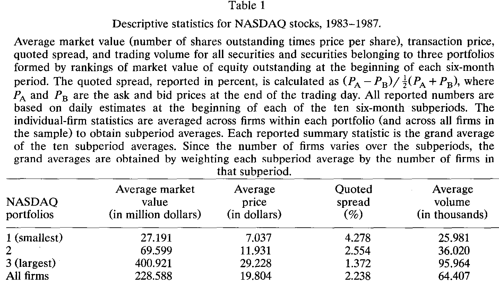
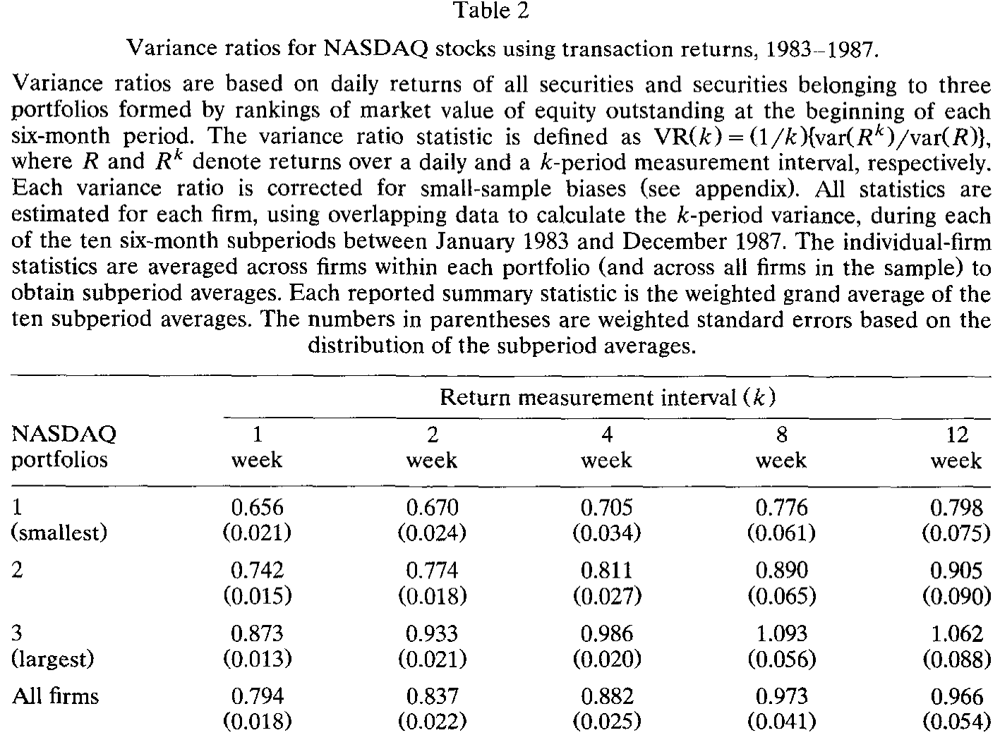
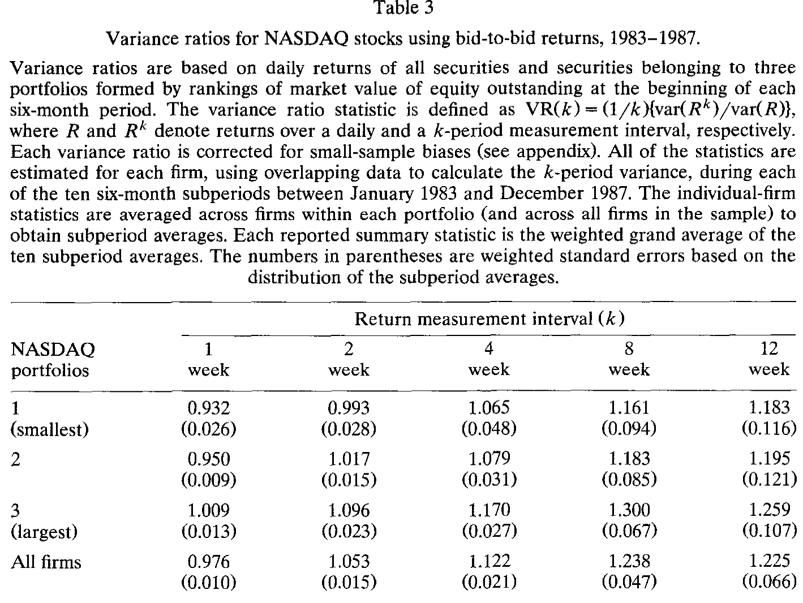
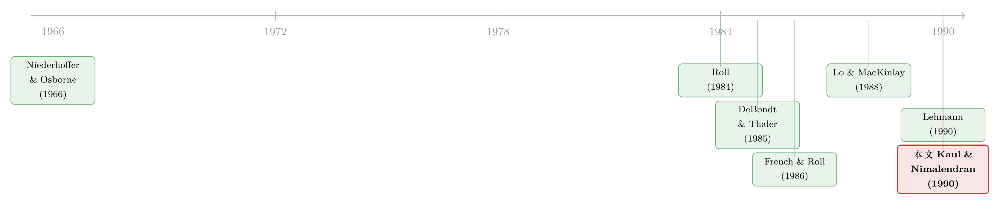

价格反转，到底是市场看走了眼，还是尺子本身有刻度误差？
本文读的是 Kaul & Nimalendran (1990, JFE)：在 NASDAQ 股票上，短期「价格反转」几乎全部来自买卖价差造成的测量误差，而非市场过度反应。一旦把买卖价差的「弹跳」剔除掉（改用 bid-to-bid 收益率），股票收益不但没有负相关，反而是正相关；而且这种价差误差还凭空制造了约一半的日度收益波动。
1 一个让人不安的「证据」
先讲一个上世纪八十年代金融学里相当流行的故事。
人们发现，股票的短期收益是「会反转的」：今天涨多了，明天往往要跌回来一点。把这种现象量化出来，就是收益率在低阶滞后上呈现负自相关 (negative autocorrelation)。这件事看似平淡，含义却惊人——如果价格真的总在「涨过头、再修正」，那市场就没有那么有效，投资者似乎对新信息过度反应 (market overreaction) 了。DeBondt and Thaler (1985) 把这套叙事推到了台前：买输家、卖赢家，长期能赚钱。French and Roll (1986) 则给出了一个更扎实的数字——对纽约和美国证券交易所（NYSE 和 AMEX）最小规模那一档股票来说，多达 26.9% 的日度收益方差，可以由价格反转来「解释」。再往后，Lehmann (1990)、Lo and MacKinlay (1990) 干脆证明：基于周收益率的反向 (contrarian) 策略，几乎总能赚到显著的正利润。
证据看起来层层叠叠，结论呼之欲出：市场会过度反应。
但这里藏着一根刺。所有这些研究，用的都是 NYSE 和 AMEX 的成交价 (transaction price)。而成交价里，混着一个谁都甩不掉的东西——买卖价差 (bid-ask spread)。一笔成交，可能打在卖价上，下一笔打在买价上，价格就这么在 bid 和 ask 之间来回「弹跳」。Niederhoffer and Osborne (1966) 早就指出，这种弹跳本身就会制造价格反转；Roll (1984) 更是把它写成了一个干净的公式：买卖价差会让收益率在滞后 1 期上产生负的自相关。
于是问题就尖锐起来了：我们看到的那个负自相关，到底是「市场看走了眼」（过度反应），还是「我们手里的尺子本身带着刻度误差」（买卖价差）？这两者的含义天差地别——前者动摇的是市场有效性这块基石，后者不过是一个方法论上的麻烦。
可惜，在只有成交价的世界里，这两股力量是搅在一起的，谁也分不开。这正是本文要解决的事。
2 一把能把两股力量分开的钥匙
接着，一个自然的问题是：怎么才能把它俩拆开？
作者抓住了一个制度变化带来的机会。1982 年全国市场系统 (National Market System, NMS) 建立后，NASDAQ 股票第一次同时有了每日的成交价和买卖报价。这意味着，对同一只股票、同一天，我们可以算出两套收益率：
- 成交收益率 (transaction returns) \(R_T\)：用成交价算，里面既有过度反应、又有买卖价差误差；
- 买价收益率 (bid-to-bid returns) \(R_B\)：用每天的 bid 报价对 bid 报价算，不含任何买卖价差弹跳。
这是整篇论文最关键的一步。逻辑极其干净：\(R_B\) 这条序列里没有 bid-ask 误差，所以它身上残留的任何价格反转，都只能算到过度反应头上。换句话说，把 \(R_B\) 单拎出来一看——
- 如果 \(R_B\) 还是负相关，那市场确实过度反应了；
- 如果 \(R_B\) 的负相关消失了，那之前看到的反转，就是买卖价差这把尺子的刻度误差。
而两套收益率的差，\(RD_t = R_{Tt} - R_{Bt}\)，恰好就是买卖价差误差本身的直接度量。这等于把那根搅在一起的绳子，一刀切成了两段。
3 模型：把「反转」写成三个零件
在动数据之前，作者先用一个极简模型把话说清楚。在一个有效市场里，价格走的是随机游走，收益率应当是纯白噪声：
$$ R_t = \mu + \eta_t $$
其中 \(\mu\) 是 \(R_t\) 的无条件均值，\(\eta_t\) 是特质白噪声，\(\eta_t \sim N(0, \sigma_\eta^2)\)，且 \(\text{cov}(\eta_t, \eta_{t-j}) = 0\) 对一切 \(j \neq 0\) 成立。这是基准（benchmark）：若收益率真长这样，它在时间上不相关，方差就会随测量区间线性增长。
现在放进「误差」。允许观测到的收益率带上一个由买卖价差和/或过度反应造成的误差成分 \(\varepsilon_t\)：
关键全在 \(\varepsilon_t\) 的「脾气」上。作者分别推了两种情形。
情形一：误差全来自买卖价差。 设买卖价差为 \(s = (P_A - P_B)/\tfrac{1}{2}(P_A + P_B)\)，\(P_A\)、\(P_B\) 是卖价与买价。若 \(\varepsilon_t\) 完全由独立同分布的买卖价差弹跳造成，Roll (1984) 证明：
$$ \text{cov}(\varepsilon_t, \varepsilon_{t-1}) = -\,\frac{s^2}{4}, \qquad \text{cov}(\varepsilon_t, \varepsilon_{t-j}) = 0 \ \ (j \geq 2) $$
$$ \text{var}(\varepsilon_t) = \frac{s^2}{2} $$
这两个式子合起来，含义非常硬：买卖价差只在滞后 1 期制造负自相关，再往后一概为零——也就是说，它让收益率表现得像一个一阶移动平均 (MA(1)) 过程。由这两式，\(\varepsilon_t\) 自身的一阶自相关恰好是 \(-\tfrac{1}{2}\)；而成交收益率 \(R_T\) 的一阶自相关绝对值会小于 \(\tfrac{1}{2}\)，因为真实波动 \(\text{var}(\eta_t) > 0\) 把它稀释了。
情形二：误差全来自过度反应。 那么误差应当在多个滞后上都为负：
$$ \text{cov}(\varepsilon_t, \varepsilon_{t-j}) < 0, \qquad j = 1, 2, 3, \dots $$
到这里，两种假说的「指纹」就泾渭分明了：买卖价差的负相关只活在滞后 1 期，过度反应的负相关却会拖出一长串滞后。 这正是后面实证要去对质的地方。
4 识别策略：方差比，和它背后的自相关
然后，怎么把上面的直觉变成可检验的统计量？作者用了方差比检验 (variance-ratio test)——这套方法当时正被 French and Roll (1986)、Lo and MacKinlay (1988)、Poterba and Summers (1988) 等人广泛使用。
定义 \(k\) 期收益方差相对于日度方差的比值：
$$ \text{VR}(k) = \frac{1}{k}\,\frac{\text{var}(R_t^k)}{\text{var}(R_t)} $$
它的妙处在于，可以被改写成日度收益率前 \(k-1\) 阶自相关系数的一个加权平均（权重算术递减）：
$$ \text{VR}(k) = 1 + \frac{2(k-1)}{k}\,\hat{\rho}_1 + \frac{2(k-2)}{k}\,\hat{\rho}_2 + \cdots + \frac{2}{k}\,\hat{\rho}_{k-1} $$
直觉很清楚：若价格是随机游走，收益率不相关，则 \(E[\text{VR}(k)] = 1\)——\(k\) 期方差就该是日度方差的 \(k\) 倍。反过来，只要收益率里有负相关成分（无论它来自买卖价差还是过度反应），方差比就会小于 1。
识别的精髓就在这一组对照里：
- 用成交收益率 \(R_T\) 算 \(\text{VR}(k)\)，量的是买卖价差与过度反应的合力，预期 $< 1$；
- 用买价收益率 \(R_B\) 算 \(\text{VR}(k)\)，已经洗掉了买卖价差，它偏离 1 多远，就是过度反应有多大。
方差比和自相关是互补的两把尺。过度反应会在「任意多个滞后」上留下负相关，方差比（它把多个滞后加权累加）更敏感；而买卖价差只在滞后 1 期作祟，这时直接看一阶自相关反而更有力。作者两把尺都用上了。
数据这边，作者用 CRSP 的 NASDAQ/NMS 日度主文件，取 1983 年 1 月到 1987 年 12 月，切成十个半年子区间（因为要求每只股票在子区间内有不间断的成交价与买卖报价）。按期初市值排成三档组合，对每只股票算出 \(R_T\)、\(R_B\)、\(RD\) 三套序列，再逐股估计、组合内平均、跨子区间按股票数加权汇总。所有方差比都做了两道小样本偏误修正（自由度修正，以及对 \(E[\hat{\rho}_j] < 0\) 导致的向下偏误的修正），细节见附录。
值得一提的是样本本身：由于「不间断报价」这个筛选条件，留下来的 NASDAQ 股票其实不小，平均市值与 NYSE/AMEX 可比；买卖价差从最小档的 4.278% 到最大档的 1.372%，全样本均值 2.238%，也和 NYSE/AMEX（Keim 1989 给的 1988 年末均值约 2.82%）在一个量级。这让本文的结论有了可外推性。

Table 1
5 反转出现：负相关，原来是尺子刻歪了
现在看证据，反转（这次是结论上的反转）就出现了。
先看成交收益率的方差比（表 2）。果然几乎全部小于 1：一周方差比从最小档的 0.656 到最大档的 0.873，全样本均值 0.794。这意味着七天的收益方差，显著地小于七倍的日度方差——典型的负相关信号。单看这张表，故事完全可以继续讲成「市场过度反应」。
但还有一个细节耐人寻味：方差比随测量区间 \(k\) 上升而上升。从 1 周走到 12 周，除了最小档，8 周和 12 周的方差比已经和 1 没有统计差异了。这说明负相关成分只在很短的窗口里起作用，越往长看，越被一个正相关成分压过去。

Table 2
真正的判决在表 3——买价收益率的方差比。把买卖价差洗掉之后，画风骤变：方差比不再小于 1，反而普遍等于或大于 1，并随 \(k\) 单调上升。全样本从一周的 0.976 一路升到 12 周的 1.225；最小档从 0.932 升到 1.183，最大档从 1.009 升到 1.259。

Table 3
这张表几乎把「过度反应」假说一剑封喉。如果 NASDAQ 股票真的过度反应，那洗掉买卖价差之后，\(R_B\) 的方差比应当依旧明显小于 1。可事实是它们贴着 1、甚至在 1 之上——负相关不仅没了，还露出了正相关的底色。换句话说，成交收益率里那个看似确凿的「反转」，绝大部分（如果不是全部）来自买卖价差这把尺子的刻度误差，而不是市场的错。
这给八十年代那批基于成交价的「过度反应」证据敲了一记警钟。负自相关 ≠ 过度反应。在你为「市场无效」欢呼之前，先问一句：你手里的价格，是成交价还是中间价？（相关的方法论隐患，也可参见《指数会「记仇」，期货却转头就忘——一道拆穿短期自相关的现货-期货实验》、《你盯着的那个「买卖价差」，有一半是假的》。）
6 顺手算的另一笔账：凭空多出来的一半波动
把买卖价差从反转里揪出来之后，作者顺手做了第二件事——量一量它制造了多少假的波动 (spurious volatility)。
逻辑接着前面：\(RD_t = R_{Tt} - R_{Bt}\) 就是买卖价差误差本身。于是定义另一个方差比
$$ \text{VRD}(k) = \frac{\text{var}(RD_t^k)}{\text{var}(R_{Tt}^k)}, \qquad k = 1, 2, 3, \dots $$
它衡量的是：在 \(k\) 期成交收益率的方差里，有多大一块是买卖价差「凭空」贡献的。这里有个关键的不对称——买卖价差制造的噪声不随测量区间增长（它是 MA(1)，只在相邻一期作祟），可真实波动却随区间线性累积。所以区间越短，噪声占比越高。也正因如此，作者特意连 \(k=1\)（日度）都算了，并指出日度估计还能为日内 (intraday) 收益的噪声占比提供一个上界。
结果相当扎眼：对较小规模的公司，买卖价差能解释超过 50% 的日度收益方差；即便是样本里最大的公司，这个比例也高达 23%。也就是说，你在高频数据上看到的「波动」，有近一半可能是假的。
这件事的实践含义不小。它意味着，基于日度乃至日内成交收益率的检验，功效（power）会被严重稀释：事件研究里你想靠缩小事件窗来提高精度，结果增加的精度被更多噪声抵消了一部分；用宏观因子去解释高频收益的回归，\(t\) 值和 \(R^2\) 都会被系统性地压低——Roll (1988) 那个著名的「\(R^2\) 之谜」，恐怕也有买卖价差的一份「功劳」。
7 一个没解开的谜
故事到这里本该圆满，但作者很诚实地留下了一个钉子。
把 NASDAQ 的结论和 French and Roll (1986) 在 NYSE/AMEX 上的发现摆在一起，会发现一个尴尬的对比：French and Roll 报告 NYSE/AMEX 的日度成交收益率在滞后 1 到 13 期上都弱负相关，拖出长长一串；而 NASDAQ 的成交收益率，负相关主要只在滞后 1 期，之后就没了——这恰恰是「纯买卖价差（MA(1)）」该有的样子。
为什么同样是成交价，NYSE/AMEX 的负相关能拖到滞后 13，NASDAQ 却只在滞后 1？是两个市场的微观结构不同（做市商制度 vs. 限价订单簿），还是 NYSE/AMEX 上真的多了一点过度反应？很遗憾，由于 NYSE/AMEX 缺少配套的买卖报价数据，作者无法把这个差异拆开。这个谜，留给了后人。
8 文献脉络
把这条线索捋一捋，会看到一场关于「同一个负号」的拉锯。
最早，Niederhoffer and Osborne (1966) 就观察到交易所里的反转，并把它和做市机制联系起来；Roll (1984) 则给了那个奠基性的公式——买卖价差如何在滞后 1 期制造负自相关，把「微观结构噪声」第一次写成了可计算的东西。与此同时，另一条线在讲完全不同的故事：DeBondt and Thaler (1985) 的「过度反应」、French and Roll (1986) 用方差比量出 NYSE/AMEX 反转能解释两成多的方差、再到 Lehmann (1990) 与 Lo and MacKinlay (1990) 的反向策略盈利——它们把同一个负号读成了「市场无效」。方差比这件工具，则由 Lo and MacKinlay (1988) 系统化，并被 Poterba and Summers (1988)、Fama and French (1988) 用来检验长期均值回归。

本文站的位置很清楚：它不发明新工具，而是找到了能把两种解释分开的数据（NASDAQ 的成交价 + 买卖报价），用方差比这把现成的尺子，给「负号到底姓什么」做了一次干净的裁决。结论是——至少在 NASDAQ，这个负号姓「价差」，不姓「过度反应」。这也和作者团队的后续工作（George, Kaul, and Nimalendran 1990；Conrad, Kaul, and Nimalendran 1990）一脉相承，都在追问短期收益里那个被价差污染的成分到底有多大。（关于「负协方差能否证明过度反应」这一争论本身，也可参见《负的协方差，凭什么就证明了「过度反应」？》、《「输家会翻身」这件事，究竟是市场犯傻，还是我们量错了风险？》。）
9 评论与延伸（Q&A + 研究方向）
(a) 几个可能的疑问
Q：bid-to-bid 收益率真的「干净」吗？买价本身不会也有噪声？
相对而言它干净得多。\(R_B\) 用的是每天同一侧（买价）的报价，避开了成交价在 bid/ask 之间来回弹跳这个最大的噪声源。它当然不是完美的——报价可能不连续、可能有逆向选择成分——但它至少把 Roll (1984) 模型里那个 \(-s^2/4\) 的机械性反转彻底剔除了。本文的论证不依赖 \(R_B\) 绝对无误差，只依赖它不含买卖价差弹跳，这一点是成立的。
Q：作者为什么不直接建模逆向选择 (adverse selection) 成分？那会不会改变结论？
作者在脚注里交代了：Glosten (1987) 指出若存在逆向选择，上面的分析要修正；但 George, Kaul, and Nimalendran (1990) 的证据显示，报价价差里的逆向选择成分很小，所以本文没有单独建模它。这是个合理的简化，不过也确实是结论稳健性的一个依赖点。
Q：方差比大于 1（正相关），这又该怎么解释？不会也是噪声吧？
正相关恰恰是过度反应的反面，所以它不可能由「修正过度的弹跳」造出来。可能的来源包括时变的预期收益、非同步交易，或个股层面真实存在的正自相关成分。本文的目的不是去解释这个正号，而是用它来反驳负号——只要 \(R_B\) 不再显著小于 1，过度反应假说就站不住了。
Q：结论只对 NASDAQ 成立，能推广到 NYSE/AMEX 吗？
不能直接推广，这正是作者诚实留下的谜。NASDAQ 的负相关只在滞后 1 期（像纯价差），而 French and Roll 报告 NYSE/AMEX 拖到滞后 13。本文样本经过筛选后市值和价差都与 NYSE/AMEX 可比，所以「价差贡献了大半反转」这个定性结论有外推性；但 NYSE/AMEX 是否额外含有过度反应，因缺数据而无法判定。
Q：为什么说这削弱了反向策略 (contrarian strategy) 的盈利性？
因为反向策略赚的正是「负自相关」的钱。如果这个负相关大部分是买卖价差弹跳，那纸面上的利润在你真正下单（买在 bid、卖在 ask）时就会被价差本身吃掉——你赚的是一个自己制造的幻觉。换句话说，必须用真实可成交的价格、扣掉价差去重算策略收益，纸面 alpha 才不至于骗人。
Q：「一半的日度波动是假的」对今天的实证研究还有意义吗？
很有意义。它提醒我们：测量区间越短，价差噪声占比越高。今天大量研究用分钟级、秒级数据，本文的逻辑意味着这些高频收益里相当一部分方差是微观结构噪声，会压低 \(t\) 值和 \(R^2\)、稀释检验功效。现代「已实现方差 (realized variance)」文献里关于最优抽样频率、噪声-信号权衡的讨论，本质上就是这条线的延续。
(b) 几个可能的研究问题与提案
1. 把这套「双收益率」识别搬到公司债市场。 【经济故事】公司债的买卖价差远大于股票，成交又稀疏，所谓「债券收益反转」很可能也主要是价差弹跳而非定价错误。用同一只债券的成交价 vs. 中间报价（或 bid-to-bid）构造两套收益率，能直接量出信用市场短期反转里有多少是噪声。 【可行性】中。TRACE 提供逐笔成交，但配套的连续 bid/ask 报价在历史上较难拿到（部分平台或交易商数据可补）。识别策略干净、与本文完全平行，难点在数据可得性与债券交易的非同步性。
2. 外资持有人与价差噪声：谁的反转更「假」？ 【经济故事】外资集中、可投资度高的股票，做市与流动性结构不同，买卖价差对短期反转的贡献可能系统性不同。可以检验「外资进入是否改变了价差噪声占总波动的比例」，从而把「外资改善流动性」这个论断落到收益的微观结构层面。 【可行性】中。需要个股层面的 bid/ask、外资持股比例（如新兴市场的「可投资度」面板）以及高频成交数据。识别上可借助外资准入的制度性变化做准自然实验，doable 但对数据拼接要求高。
3. 用现代高频数据重估「价差贡献的波动占比」随时间的演变。 【经济故事】1983–1987 年价差普遍在百分之一以上；十进制化、做市电子化之后价差大幅收窄。本文那个「日度波动一半是假的」结论，今天还成立吗？把 \(\text{VRD}(k)\) 在长样本上逐年重算，能画出一条「微观结构噪声占比」的历史曲线。 【可行性】高。TAQ 数据提供逐笔成交与报价，方法可直接照搬本文公式。这是一个干净、低风险、几乎一定 doable 的复制+延伸研究。
4. 跨市场之谜的再检验：NASDAQ vs. NYSE 的「滞后长度」差异从何而来？ 【经济故事】本文留下的钉子——为什么 NASDAQ 负相关只在滞后 1、NYSE/AMEX 却拖到滞后 13。如今 NYSE 也有完整报价数据，可以用同样的 \(R_T\) vs. \(R_B\) 分解，判断 NYSE 的长滞后负相关里到底有没有「价差之外」的成分（真过度反应或非同步交易）。 【可行性】高。数据现成（TAQ），方法平行，是对一个三十多年悬案的直接回答。
10 我的判断
这篇论文的贡献，与其说是「发现了什么」，不如说是示范了如何把一个被搅在一起的问题切开。在只有成交价的年代，「负自相关 = 过度反应」几乎成了默认读法；本文用一个制度性的数据机会（NMS 同时提供成交价与报价），加一把现成的工具（方差比），就把那个负号的「姓氏」验明正身——至少在 NASDAQ，它姓价差。这种「用更好的数据，而非更复杂的模型，去解决识别问题」的思路，今天读来依然干净利落。
对识别的担忧，我有两点。其一，结论依赖「逆向选择成分很小」这个外部判断（来自作者自己团队的另一篇工作），若这个前提在别的样本上不成立，bid-to-bid 收益率也未必那么干净。其二，也是作者自己承认的，整个结论被钉在 NASDAQ 上，而 NASDAQ 的做市商制度与 NYSE 的专家/限价簿制度差别很大；把「价差解释了大半反转」推广到所有市场，需要更谨慎——NYSE/AMEX 那个拖到滞后 13 的长尾，仍是悬案。
后续我最想看到的，是把这套识别原封不动地搬到流动性更差、价差更宽的市场去——公司债是最自然的候选。那里「反转」的噪声成分大概率比股票更夸张，而本文的方法恰好能告诉我们：当一个市场看起来「会反转」时，它究竟是在纠错，还是只是在自己的买卖价差里来回弹跳。
参考文献
DeBondt, Werner F. M. and Richard Thaler (1985). Does the stock market overreact? Journal of Finance 40(3), 793–805.
French, Kenneth R. and Richard Roll (1986). Stock return variances: The arrival of information and the reaction of traders. Journal of Financial Economics 17(1), 5–26.
Glosten, Lawrence R. (1987). Components of the bid-ask spread and the statistical properties of transaction prices. Journal of Finance 42(5), 1293–1308.
Keim, Donald B. (1989). Trading patterns, bid-ask spreads, and estimated security returns: The case of common stocks at calendar turning points. Journal of Financial Economics 25(1), 75–97.
Lehmann, Bruce N. (1990). Fads, martingales, and market efficiency. Quarterly Journal of Economics 105(1), 1–28.
Lo, Andrew W. and A. Craig MacKinlay (1988). Stock market prices do not follow random walks: Evidence from a simple specification test. Review of Financial Studies 1(1), 41–66.
Lo, Andrew W. and A. Craig MacKinlay (1990). When are contrarian profits due to stock market overreaction? Review of Financial Studies 3(2), 175–205.
Niederhoffer, Victor and M. F. M. Osborne (1966). Market making and reversal on the stock exchange. Journal of the American Statistical Association 61(316), 897–916.
Poterba, James M. and Lawrence H. Summers (1988). Mean reversion in stock prices: Evidence and implications. Journal of Financial Economics 22(1), 27–59.
Roll, Richard (1984). A simple implicit measure of the effective bid-ask spread in an efficient market. Journal of Finance 39(4), 1127–1139.
Roll, Richard (1988). R². Journal of Finance 43(3), 541–566.